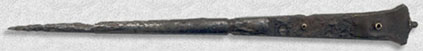
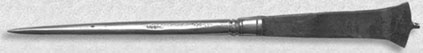
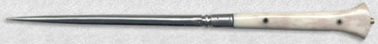

L'Atelier
Fondé en 1995, Arma Bohemia réunit plus de 50 artisans tchèques réalisant des reproductions historiques d'armes, d'armures et d'objets du quotidien.
Origines
D'une forteresse suisse à un réseau d'artisans tchèques
Arma Bohemia a été fondé en 1995 par le maître d'armes Jan Fantys et le cascadeur Jakub Malovany. Notre société s.à r.l. est spécialisée dans la reproduction d'objets de différentes époques ayant appartenu au passé européen. La première boutique se trouvait à Romainmotier, en Suisse, dans les caves d'une forteresse du XIIIe siècle.
Notre travail, que nous voulons toujours de qualité et en constante évolution, nous a permis de fournir de nombreux groupes et spectacles, mais aussi des groupes aussi prestigieux que la Saint Georges Company, d'anciens gardes pontificaux, ou encore le groupe d'archéologie expérimentale Hodie Anno Domini.
La République tchèque, petit pays au cœur de l'Europe, a une grande et fort ancienne tradition dans la réalisation artisanale d'objets civils et militaires. Ce sont plus de 50 artisans qui travaillent avec nous, suivant un cahier des charges très strict, élaboré par Arma Bohemia.
Dans les mots des fondateurs
Arma Bohemia a été fondé en 1995 par le maître d'armes Jan Fantys et le cascadeur Jakub Malovany. Notre société s.à r.l. est spécialisée dans la reproduction d'objets de différentes époques ayant appartenu au passé européen.
Notre travail, que nous voulons toujours de qualité et en constante évolution, nous a permis de fournir de nombreux groupes et spectacles, mais aussi des groupes aussi prestigieux que la Saint Georges Company, d'anciens gardes pontificaux, le groupe d'archéologie expérimentale Hodie Anno Domini, ainsi que des théâtres nationaux, de grandes productions cinématographiques et des écoles spécialisées dans l'escrime historique.
La République Tchèque, petit pays au cœur de l'Europe, a une grande et fort ancienne tradition dans la réalisation artisanale d'objets civils et militaires. Ce n'est pas moins de 50 artisans qui travaillent avec nous suivant un cahier des charges très strict, élaboré par Arma Bohemia. L'ensemble de nos productions est basé sur les informations que nous trouvons dans les musées, les collections privées, dans notre propre collection d'objets anciens, dans les manuscrits et les différents documents scientifiques. Bien entendu, nous savons également nous adapter aux besoins spécifiques du monde du spectacle, qui naturellement ne sont pas les mêmes que ceux des groupes d'évocation historique.
Arma Bohemia a fait le choix de présenter une collection limitée de sa production si variée. En effet, 80% de nos réalisations sont destinées à des clients qui ont fait valoir des souhaits particuliers. De plus, nous ne désirons pas devenir une grande surface proposant des stéréotypes d'objets — ce serait, d'une certaine façon, un non-sens par rapport à l'Histoire. N'hésitez pas à nous contacter : envoyez-nous vos copies de manuscrit, vos dessins techniques, vos photos, pour obtenir des informations sur nos possibilités de production, l'estimation du prix et le délai.
Ce site sera périodiquement mis à jour avec de nouvelles images et de nouvelles catégories. Nous vous invitons à le visiter régulièrement.
Sources & références
Une production fondée sur des originaux documentés
L'ensemble des productions est basé sur les informations trouvées dans les musées, les collections privées, la propre collection d'objets anciens de l'atelier, les manuscrits et les documents scientifiques — ainsi que sur les besoins spécifiques du monde du spectacle et du cinéma.
Manuscrits & documents
Illustrations et sources écrites d'époque informent la forme, les proportions et la construction de chaque pièce.
Musées & collections privées
De nombreuses pièces sont des copies exactes d'originaux conservés dans des institutions comme la Wallace Collection à Londres ou le Metropolitan Museum of Art à New York.
Une collection d'originaux en propre
La collection de pièces d'époque de l'atelier, en constante croissance, permet des dimensions, une structure et un poids fidèles pour les nouvelles copies.
Environ 80% de fabrication sur mesure
La majeure partie de ce que fabrique Arma Bohemia n'apparaît pas dans ce catalogue : c'est réalisé selon la référence et les souhaits propres du client.

Matériaux & technologie
Retrouver les techniques anciennes
« En étudiant les objets anciens issus de notre collection, nous pouvons créer des copies bien plus authentiques — en dimensions, technique de repli, poids. »
Certains de nos clients demandent une authenticité maximale. Nos articles ne doivent pas seulement avoir une forme juste et être fabriqués à la main : la structure du matériau doit également correspondre à celle de l'objet original. L'acier médiéval était généralement replié par le forgeron plusieurs fois sur lui-même pour obtenir le meilleur matériau possible.
Pour reproduire ce type d'acier replié, l'atelier utilise notamment de vieux bouts de fer de plus de 300 ans d'âge. Les objets en acier plié peuvent être fabriqués à la demande.

Un pic à viande original du XVe siècle, trouvé sur un ancien champ de bataille.

Pic à viande forgé à la main, à partir du matériau approprié.

Copie finie avec poignée en os — portée à la ceinture ou sur le fourreau.
Retrouvez les pièces récentes de l'atelier
Arma Bohemia rencontre sa communauté de reconstituteurs et de clients tout au long de l'année, lors de foires et marchés historiques à travers l'Europe.